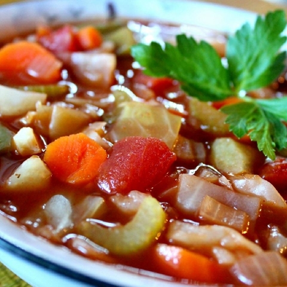

Cabbage Soup

Description
Cabbage soup is perfect vegetable soup made with cabbage, tomato, carrots, celery, and spices, ready in under 45 minutes.
It's the perfect thing to make when it's cold outside, plus you can do it in the slow cooker on days when youre busy.
A lot of people make cabbage soup for weight loss because it's low calorie but its also totally inexpensive and super easy to make.
It can be served with freshly made bread or dinner rolls and for lunch, serve it with some crackers or breadsticks and a simple salad.
Ingredients
- 5 carrots, chopped
- 3 onions, chopped
- 2 (16 ounce) cans whole peeled tomatoes, with liquid
- 1 large head cappage, chopped
- 1 (1 ounce) envelope dry onion soup mix
- 1 (15 ounce) can cut green beans, drained
- 2 quarts tomato juice
- 2 green bell peppers, diced
- 10 stalks celery, chopped
- 1 (14 ounce) can beef broth
Steps
- Place carrots, onions, tomatoes, cabbage, green beans, peppers, and celery in a large pot.
- Add onion soup mix, tomato juice, beef broth, and enough water to cover vegetables.
- Simmer until vegetables are tender. May be stored in the refrigerator for several days.